4. 設定画面(個人)¶
設定画面にはログインしているユーザー個人の設定を行う「個人用設定」と、管理者のみが設定できる「管理者用設定」があります。 [1] 設定を行うことで WebMagic をより快適に利用できるようになります。
個人用設定では、以下の9種類の設定を行うことができます。
4.1. 個人情報¶
4.1.1. 個人情報を変更する¶
メニューの
 をクリックします。
をクリックします。 をクリックします。
をクリックします。各項目を変更し、 適用 をクリックします。

Note
メール通知
「メール通知」は、次の場合に通知するメールアドレスを設定します。伝言 : 行先伝言板で自分宛に伝言が書き込まれた場合スケジュール : が自分のスケジュールを登録した場合、アラームメールを設定した場合ワークフロー : 自分が閲覧すべきワークフローがある場合
4.2. スケジュール¶
4.2.1. スケジュールのアクセス権を設定する¶
メニューの
をクリックします。 をクリックします。
をクリックします。「所属一覧」からアクセス権を設定したい所属を選択し、 追加→ をクリックします。

「所属アクセス権一覧」から所属を選択し、設定したいアクセス権をリストから選択し， 変更 をクリックします。

適用 をクリックします。

Note
アクセス権一覧
詳細参照 : 一つ一つのスケジュールの内容まで閲覧できます。（登録はできません）一覧参照 : 一つ一つのスケジュールの内容は閲覧できませんが、一日単位や週間・月間単位の一覧は閲覧できます。（登録はできません）作 成 : スケジュールを登録することができます。権限無し : スケジュールを閲覧できなくなります。Note
所属一覧から [全体] を選択し 追加→ をクリックすると、所属アクセス権一覧の [全体] の デフォルト を外すことができます
4.2.2. スケジュールのアクセス権を削除する¶
ここでは、所属単位でアクセス権を削除する方法を紹介します。
メニューの
をクリックします。- をクリックします。
「所属アクセス権一覧」からアクセス権を削除したい所属を選択し、 ←削除 をクリックします。
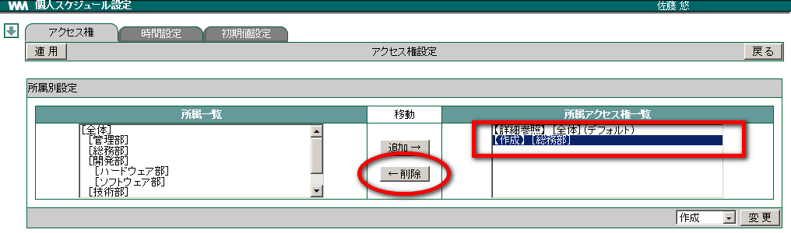
適用 をクリックします。
4.2.3. 時間設定でスケジュールの表示時間を設定する¶
メニューの
をクリックします。- をクリックします。
[時間設定] タブを選択します。

時間を選択し、 適用 をクリックします。

4.2.4. スケジュールの画面表示初期値を設定する¶
メニューの
をクリックします。- をクリックします。
[初期値設定] タブを選択します。

「最初に表示する画面」を選択します。

Note
最初に表示する画面一覧
個人一日 : 自分のスケジュールが１日分表示されます。個人週間 : 自分のスケジュールが１週間分表示されます。個人月間 : 自分のスケジュールが１ヶ月分表示されます。グループ一日 : 指定したグループのメンバーのスケジュールが一日分表示されます。グループ週間 : 指定したグループのメンバーのスケジュールが一週間分表示されます。「最初に表示するグループ」を選択します。「共有」・「個人」をクリックし、 ▼ で表示するグループ(所属)を選択して、 適用 をクリックします。
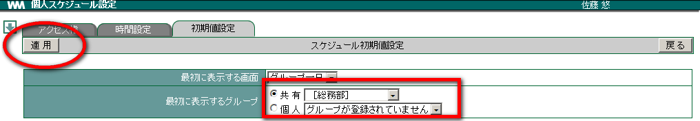
Note
個人グループを設定する場合
「個人」グループは、［設定画面］で［グループ］の設定を行っていない場合、選択できません。選択するには、あらかじめ「個人グループ」を作成しておく必要があります。
4.3. グループ¶
［グループ］で設定する「グループ」は、管理者が設定する「部署」のことではなく、個人単位で設定できるユーザーグループのことです。ここで設定したグループは、メールの一括送信に利用したり、グループに所属するメンバーのスケジュールを管理したりできます。
4.3.1. グループを登録する¶
- メニューの をクリックします。
- 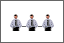 をクリックします。
- 新規登録 をクリックします。

各項目を入力し、 OK をクリックします。
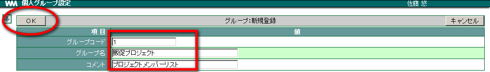
Note
グループコードには
グループコードには任意の数字を入力します。複数のグループを登録する場合、グループコードが重複しないようにします。また、複数のグループを登録した場合にはグループ名はグループコードが若い順に表示されます。
4.3.2. グループを修正する¶
メニューの
をクリックします。をクリックします。
修正したいグループの「修正」をクリックします。
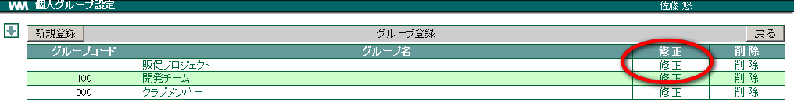
各項目を修正し、 OK をクリックします。

4.3.3. グループを削除する¶
メニューの
をクリックします。をクリックします。
削除したいグループの「削除」をクリックします。

確認メッセージが表示されたら、 OK をクリックします。
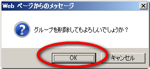
4.3.4. グループにユーザーを登録する¶
メニューの
をクリックします。をクリックします。
ユーザーを登録したいグループのグループ名をクリックします。

「ユーザー一覧」からユーザーを選択し、 追加→ をクリックします。

OK をクリックします。
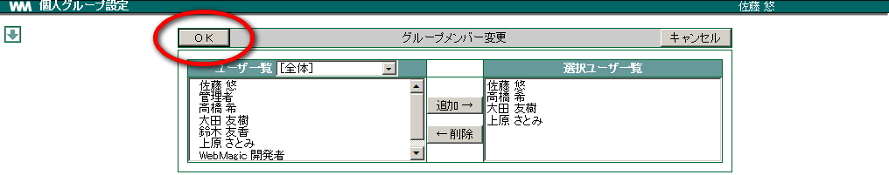
4.3.5. グループのユーザーを変更する¶
メニューの
をクリックします。をクリックします。
ユーザーを変更したいグループのグループ名をクリックします。
追加したい場合、「ユーザー一覧」からユーザーを選択し、 追加→ をクリックします。
削除したい場合、「選択ユーザー一覧」からユーザーを選択し、 ←削除 をクリックします。
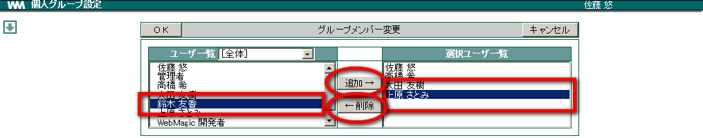
OK をクリックします。
4.4. 設備¶
[設備] では、 [設備予約] 画面の設定や「簡単予約」画面の入力設定などを行います。 [3]
4.4.1. 簡単予約設定¶
[設備予約] 画面の「簡単予約」を使って予約する際に 目的･連絡先 を選択して入力できるように設定します。
4.4.2. 目的を登録する¶
メニューの
をクリックします。 をクリックします。
をクリックします。[簡単予約設定] タブをクリックします。

プルダウンメニューを確認し、 新規登録 をクリックします。

各項目を入力し、 OK をクリックします。
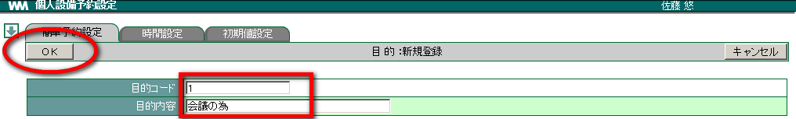
Note
目的コードには
目的コードには任意の数字を入力します。複数の目的コードを登録する場合、目的コードが重複しないようにします。
4.4.3. 連絡先を登録する¶
メニューの
をクリックします。- をクリックします。
[簡単予約設定] タブをクリックします。
プルダウンメニューを確認し、 新規登録 をクリックします。
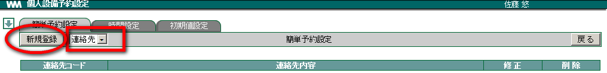
各項目を入力し、 OK をクリックします。

Note
連絡先コードには
連絡先コードには任意の数字を入力します。複数の目的コードを登録する場合、連絡先コードが重複しないようにします。
4.4.4. 目的･連絡先を修正する¶
メニューの
をクリックします。- をクリックします。
[簡単予約設定] タブをクリックします。

各項目を修正し、 OK をクリックします。
4.4.5. 目的･連絡先を削除する¶
メニューの
をクリックします。- をクリックします。
[簡単予約設定] タブをクリックします。
削除したい目的･連絡先の「削除」をクリックします。

確認メッセージが表示されたら、 OK をクリックします。
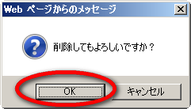
4.4.6. 時間設定¶
[時間設定] タブでは、予約時の表示時間間隔を15分間隔、30分間隔などに変更することができます。
メニューの
をクリックします。- をクリックします。
[時間設定] タブをクリックします。

各項目の ▼ をクリックし、入力を行い， 適用 をクリックします。

Note
初期の設定に戻すには、 規定値に戻す をクリックします。
4.4.7. 初期値設定¶
[初期値設定] タブでは、設備予約画面を開いた時に最初に表示される設備の初期値設定を行います。
メニューの
をクリックします。- をクリックします。
[初期値設定] タブをクリックします。

プルダウンメニューから最初に表示させる設備を選択し、 * 適用 をクリックします。
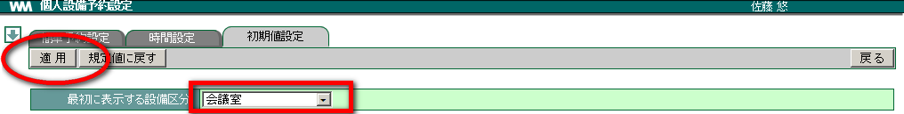
Note
初期の設定に戻すには、 規定値に戻す をクリックします。
4.5. 掲示板¶
掲示板を開いた時に最初に表示される項目を設定することができます。一番に確認したい項目(掲示板)を設定します。 [4]
4.5.1. 掲示板を設定する¶
メニューの
をクリックします。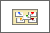 をクリックします。
「最初に表示するカテゴリ」･「掲載期限」の ▼ をクリックし、選択します。
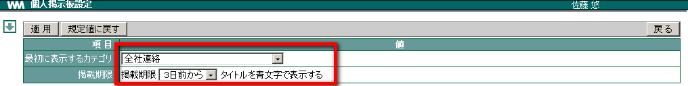
適用 をクリックします。
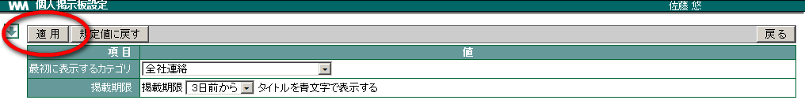
Note
初期の設定に戻すには、 規定値に戻す をクリックします。
4.6. ワークフロー¶
4.6.1. 申請経路を設定する¶
- メニューの をクリックします。
 をクリックします。
をクリックします。- 新規登録 をクリックします。

「申請経路名」を任意に入力し、「ユーザー一覧」から承認者を選択して 追加→ をクリックします。
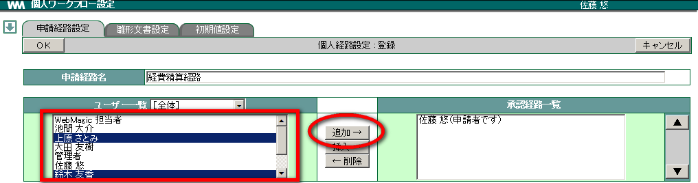
「優先順序」を変更し、 OK をクリックします。
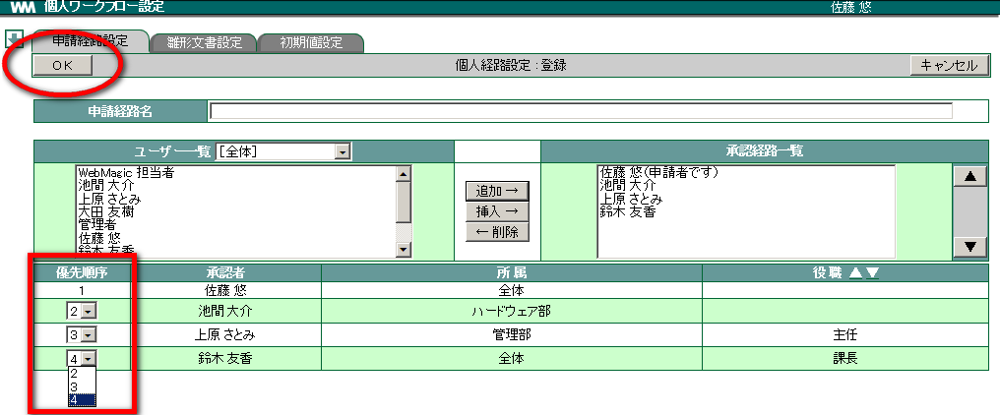
4.6.2. 申請経路を修正する¶
メニューの
をクリックします。- をクリックします。
修正したい経路名の「修正」をクリックします。

各項目を修正し、 OK をクリックします。
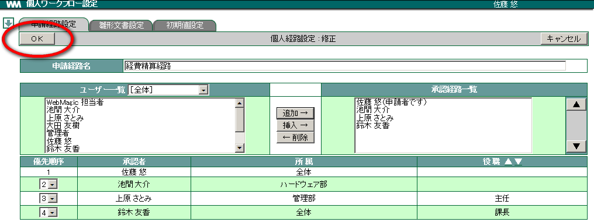
4.6.3. 申請経路を削除する¶
メニューの
をクリックします。- をクリックします。
削除したい経路名の「削除」をクリックします。

確認メッセージが表示されたら OK をクリックします。
4.6.4. 申請する際の文書の雛形を設定する¶
メニューの
をクリックします。- をクリックします。
[雛形文書設定] タブをクリックし、 新規登録 をクリックします。
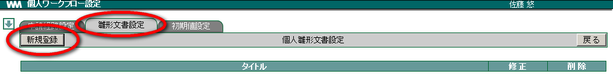
「タイトル」に任意に入力し、「雛形」に本文となる文章を入力して OK をクリックします。
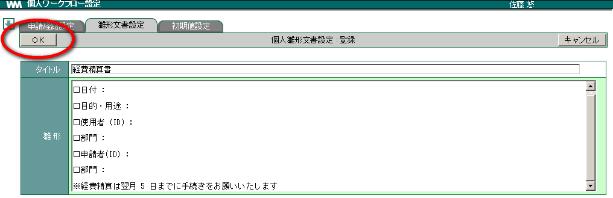
4.6.5. 申請する際の文書の雛形を修正する¶
メニューの
をクリックします。- をクリックします。
[雛形文書設定] タブをクリックし、 修正したい雛形の「修正」をクリックします。
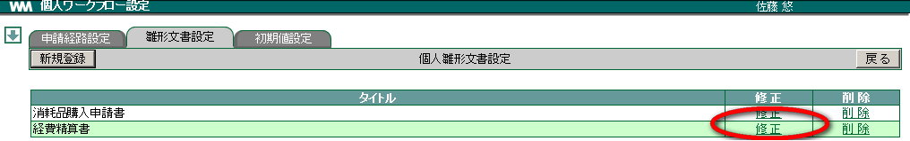
各項目を修正し、 OK をクリックします。

4.6.6. 申請する際の文書の雛形を削除する¶
メニューの
をクリックします。- をクリックします。
[雛形文書設定] タブをクリックし、 削除したい雛形文書の「削除」をクリックします。

確認メッセージが表示されたら、 OK をクリックします。

4.6.7. 最初に表示される項目を設定する¶
メニューの
をクリックします。- をクリックします。
[初期値設定] タブをクリックし、項目の ▼ 表示する項目を選択します。
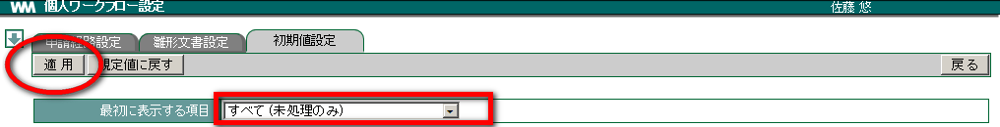
Note
初期の設定に戻すには、 規定値に戻す をクリックします。
4.7. URL リンク¶
4.7.1. URL カテゴリを設定する¶
メニューの
をクリックします。 をクリックします。
をクリックします。「カテゴリ名」「説明」を任意に入力し、 追加 をクリックします。

カテゴリ名が表示されたことを確認し、 戻る をクリックします。
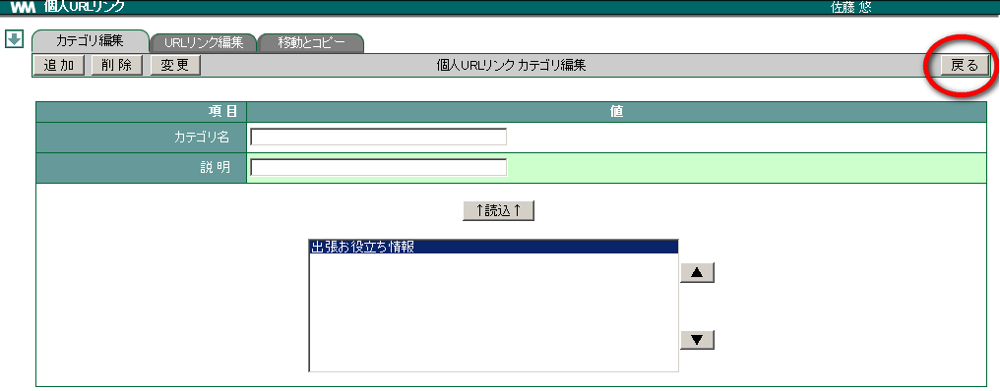
4.7.2. 登録した URL カテゴリを変更する¶
メニューの
をクリックします。- をクリックします。
変更したいカテゴリ名を選択し、 ↑読込↑ をクリックします。

「カテゴリ名」や「説明」を変更し、 変更 をクリックします。

4.7.4. 登録した URL カテゴリを削除する¶
メニューの
をクリックします。- をクリックします。
削除したいカテゴリ名を選択し、 削除 をクリックします。

確認メッセージが表示されたら、 OK をクリックします。

Warning
カテゴリを削除するとカテゴリに登録されているURLリンクも削除されます。
4.7.5. URL リンクを設定する¶
メニューの
をクリックします。- をクリックします。
[URLリンク編集] タブをクリックします。
あらかじめ設定しておいた「カテゴリ」を選択し、「リンク名」「URL」「説明」等を任意に入力して 追加 をクリックします。

4.7.6. 登録した URL リンクを変更する¶
メニューの
をクリックします。- をクリックします。
[URLリンク編集] タブをクリックします。
変更したい URL リンクがあるカテゴリを選択、対象となるリンク名を ▲ ▼ の枠内より選択して ↑読込↑ をクリックします。

「リンク名」や「URL」「説明」を変更し、 変更 をクリックします。


4.7.8. 登録した URL リンクを削除する¶
メニューの
をクリックします。- をクリックします。
[URLリンク編集] タブをクリックします。
削除したい URL リンクがあるカテゴリを選択し、 削除 をクリックします。

確認メッセージが表示されたら、 OK をクリックします。
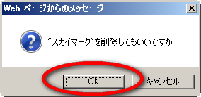
4.7.9. リンクを移動またはコピーする¶
メニューの
をクリックします。- をクリックします。
[移動とコピー] のタブをクリックし、移動またはコピーさせたいリンク名を選択します。

「コピー・移動先」を選択し、コピーしたい場合は コピー を，移動させたい場合は 移動 をクリックします。

確認メッセージが表示されたら OK をクリックします。
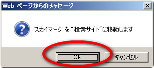
4.8. シングルサインオン¶
シングルサインオンでは、シングルサインオンのログインIDとパスワードの設定が行えます。 [5]
4.8.1. シングルサインオンリンクを設定する¶
メニューの
をクリックします。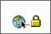 をクリックします。
左側のツリーから設定したいメニューを選択します。

シングルサインオン時に必要な項目を入力します。
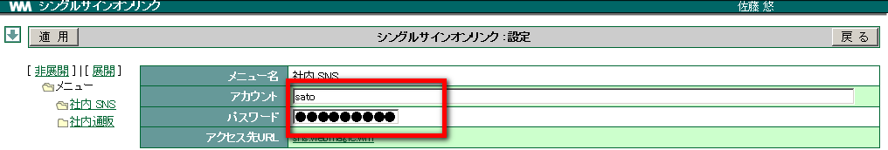
適用 をクリックします。

4.9. その他¶
その他では WebMagic の各機能をクリックすると表示される、表示形式の初期値を設定します。
4.9.1. その他の各種表示形式を設定する¶
メニューの
をクリックします。 をクリックします。
をクリックします。各項目を選択し、 適用 をクリックします。
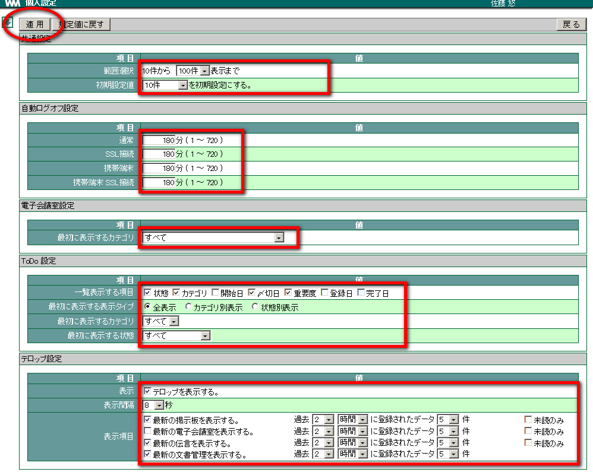
Note
各設定内容
共通設定 : メール・掲示板等で一覧表示される件数を設定します。自動ログオフ設定 : にログイン後、画面はそのままで指定時間操作がなかった時に、指定時間を経過するとログオフします。会議室設定 : 会議室設定」を開いた際に表示される初期設定画面を設定します。ToDo設定 : [ToDo] を開いた際に表示される初期画面を設定します。テロップ設定 : 掲示板等の最新情報の設定を行います。伝言を設定すると、本人宛の伝言テロップが本人の画面上だけに流れます。Note
初期の設定に戻すには、 規定値に戻す をクリックします。
脚注
| [1] | 「管理者用設定」は、管理者権限があるユーザーのみ表示されます。 |
| [2] | パスワードはセキュリティのため ●●● と表示されます。 |
| [3] | 設備の詳細情報（写真、収容人数、備考）などの設定は、管理者が行います。 |
| [4] | 掲示板のカテゴリ追加等は、管理者が行います。 |
| [5] | シングルサインオンのメニュー追加等は、管理者が行います。 |